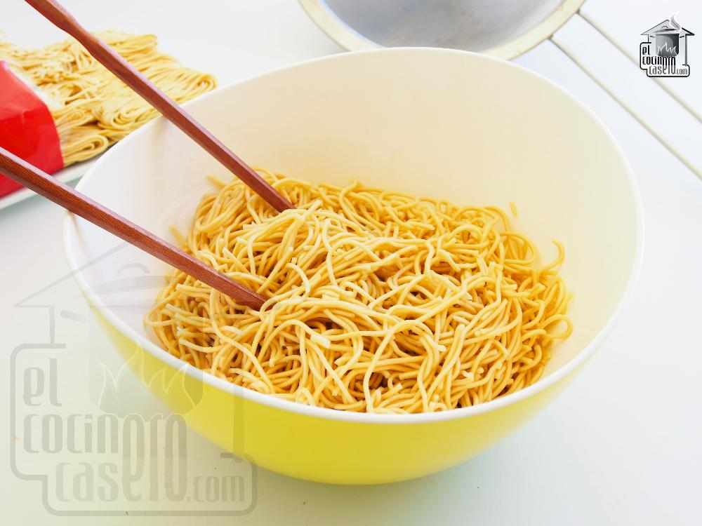

Soy Noodles

Description
Lasagna known as lasagne, is a type of pasta, possibly one of the oldest types,[2] made of very wide, flat sheets. Either term can also refer to an Italian dish made of stacked layers of lasagna alternating with fillings such as ragù (ground meats and tomato sauce), vegetables, cheeses (which may include ricotta, mozzarella, and parmesan), and seasonings and spices.
The dish may be topped with grated cheese, which becomes melted after baking. Typically cooked pasta is assembled with the other ingredients and then baked in an oven. The resulting baked pasta is cut into single-serving square portions.
Ingredients
- 1 tablespoon soy sauce
- 1 tablespoon Shaoxing wine
- 2 teaspoons dark soy sauce or tamari
- 2 teaspoons sesame oil
- 2 teaspoons dark brown sugar
- 1 teaspoon sriracha
- 2 tablespoons vegetable oil, divided
- 3 ounces (2 ‘bundles’) thin Hong Kong-style egg noodles
- 2 garlic cloves, minced
- 2 green onions, sliced into matchsticks, white/light green and darker green parts separated
- 1 medium carrot, thinly sliced into matchsticks or ribbons
- 3 ounces bean sprouts
Steps
- In a small bowl, whisk together soy sauce, dark soy sauce, Shaoxing wine, sesame oil, sugar, and sriracha. Set aside.
- Bring a large pot of water to a boil. Add noodles and cook for 2 to 3 minutes or until tender. Drain and rinse under cool water.
- In a large skillet or wok, heat 1 tablespoon vegetable oil over medium-high until it shimmers. Add noodles and cook for 2-3 minutes, without stirring, until bottoms are slightly browned. Flip over as best you can and let cook for another 2 minutes. (Even though the noodles will not get entirely crispy, this step helps dry them out so they do not stick and absorb all the flavorful sauce.) Slide noodles onto a plate and set aside temporarily.
- Return skillet to medium-high heat with remaining 1 tablespoon oil. Add garlic along with white and light green parts of green onion and quickly sautée until fragrant, about 30 seconds. Return noodles to skillet along with soy sauce mixture. Toss well with a pair of tongs or chopsticks, breaking up clumps of noodles as you go, until noodles are entirely coated, about 2 to 3 minutes. Add dark green parts of green onion, carrot ribbons, and bean sprouts and cook for 1 minute more or until just softened.
- Remove from heat and divide among bowls; serve immediately.